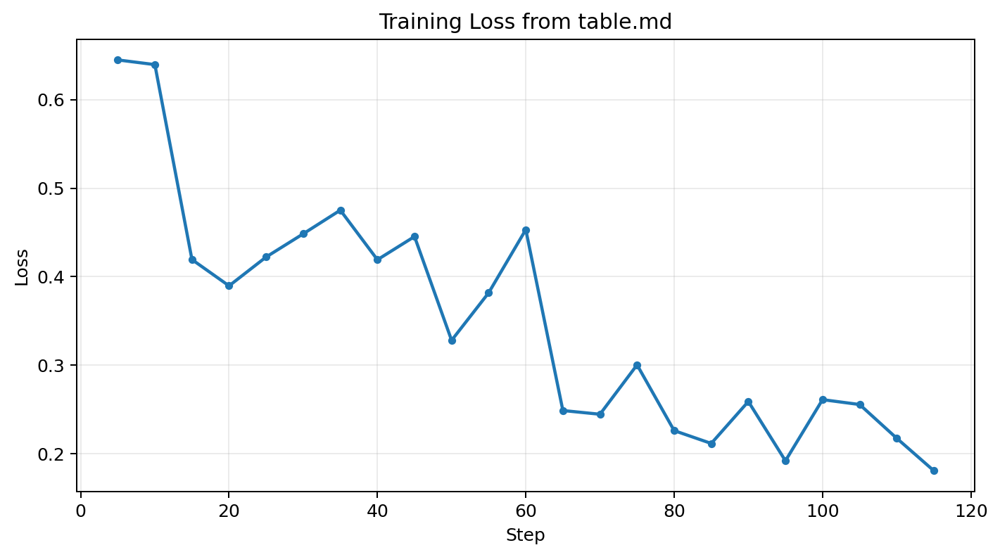

Training Loss
Current training loss snapshot
python graph
Raw matplotlib output

rollouts
Sample trajectories
trajectory 01 · biorl
reward 0.46
COc1ccc(Nc2ncc(C(=O)N3CCOCC3)s2)cc1
trajectory 02 · biorl
reward 0.79
COc1cc(Nc2ncc(C(=O)N3CCN(C)CC3)s2)ccc1F
trajectory 03 · biorl
reward 0.84
CCOc1nc(Nc2ccc(F)c(Cl)c2)ncc1C(=O)N1CCOCC1
trajectory 04 · qwen3-4b base
reward 0.00
CCN1C=NC2=CC(=O)N(C)C=C21C(